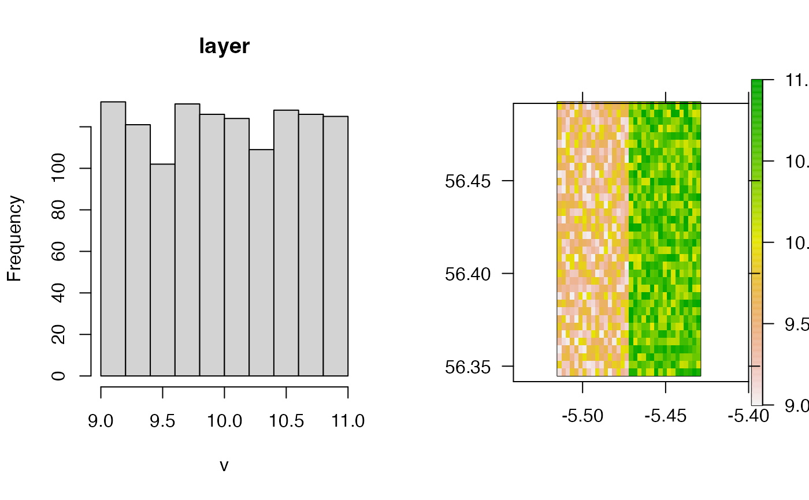

This function is designed to populate a raster with simulated values. To implement the function, a (blank) raster should be supplied. A user-defined function, or list of functions, is evaluated across this raster, or across sub-regions of this raster, to generate a new raster with simulated values.
sim_surface( blank, n = 1L, sim_values, mask = NULL, mask_inside = FALSE, plot = 1:2L )
Arguments
| blank | A |
|---|---|
| n | An integer that defines the number of (approximately equal area) pieces into which to split |
| sim_values | A function or, if |
| mask, mask_inside | Arguments required to implement a spatial mask via |
| plot | An integer that defines whether or not to plot a histogram of simulated values ( |
Value
The function returns a raster, with the same properties as blank, with values generated from the sim_values function(s).
Author
Edward Lavender
Examples
#### Example (1): Simulate values across the whole raster sim_surface(dat_gebco, sim_values = function(n) stats::runif(n = n, 0, 1))#>#> class : RasterLayer #> dimensions : 57, 74, 4218 (nrow, ncol, ncell) #> resolution : 257, 463 (x, y) #> extent : 695492.1, 714510.1, 6246657, 6273048 (xmin, xmax, ymin, ymax) #> crs : +proj=utm +zone=29 +ellps=WGS84 +towgs84=0,0,0,0,0,0,0 +units=m +no_defs #> source : memory #> names : layer #> values : 0.0003020891, 0.9997734 (min, max) #>#>#> class : RasterLayer #> dimensions : 57, 74, 4218 (nrow, ncol, ncell) #> resolution : 257, 463 (x, y) #> extent : 695492.1, 714510.1, 6246657, 6273048 (xmin, xmax, ymin, ymax) #> crs : +proj=utm +zone=29 +ellps=WGS84 +towgs84=0,0,0,0,0,0,0 +units=m +no_defs #> source : memory #> names : layer #> values : -3.638477, 3.642367 (min, max) #>#### Example (2): Simulate values differently across different areas # .. by defining the number of areas into which to split the raster # .. and a list of function(s) sim_surface(dat_gebco, n = 2, sim_values = list(function(n) stats::runif(n = n, 0, 1), function(n) stats::runif(n = n, 10, 11)) )#>#> class : RasterLayer #> dimensions : 57, 58, 3306 (nrow, ncol, ncell) #> resolution : 257, 463 (x, y) #> extent : 697548.1, 712454.1, 6246657, 6273048 (xmin, xmax, ymin, ymax) #> crs : +proj=utm +zone=29 +ellps=WGS84 +towgs84=0,0,0,0,0,0,0 +units=m +no_defs #> source : memory #> names : layer #> values : 0.0002273195, 10.9999 (min, max) #>#### Example (3): Include a spatial mask sim_surface(dat_gebco, n = 2, sim_values = list(function(n) stats::runif(n = n, 9, 10), function(n) stats::runif(n = n, 10, 11)), mask = dat_coast, mask_inside = TRUE )#>#> class : RasterLayer #> dimensions : 57, 58, 3306 (nrow, ncol, ncell) #> resolution : 257, 463 (x, y) #> extent : 697548.1, 712454.1, 6246657, 6273048 (xmin, xmax, ymin, ymax) #> crs : +proj=utm +zone=29 +ellps=WGS84 +towgs84=0,0,0,0,0,0,0 +units=m +no_defs #> source : memory #> names : layer #> values : 9.000353, 10.99982 (min, max) #>